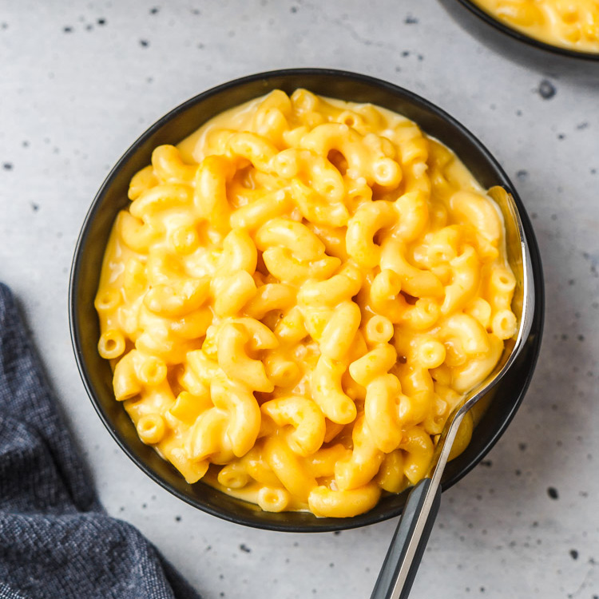

Macaroni and Cheese

Simple Stovetop Macaroni and Cheese
A quick, easy, and tasty macaroni and cheese dish. This recipe is simple and cheap.
Looking for a homemade alternative to the boxed mac and cheese that's just as quick and easy?
This stovetop recipe uses staple ingredients and comes together in just 25 minutes.
Ingredients
- 1 (8 ounce) box elbow macaroni
- 1/4 cup butter
- 1/3 cup all-purpose flour
- 1/2 teaspoon salt
- ground black pepper to taste
- 2 cups milk
- 2 cups shredded cheddar cheese
Directions
- Bring a large pot of lightly salted water to a boil. Cook elbow macaroni
in the boiling water, stirring occasionally until cooked through but firm to
the bite, about 8 minutes.
- At the same time, melt butter in a saucepan over medium heat. Add flour,
salt, and pepper and stir until smooth, about 5 minutes. Pour in milk slowly, while
stirring continuously. Continue to cook and stir until mixture is smooth and bubbling,
about 5 minutes, makign sure the milk doesn't burn.
- Add Cheedar cheese and stir until melted, 2 to 4 minutes.
- Drain macaroni and fold into cheese sauce until coated.